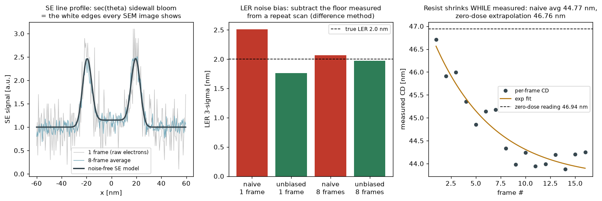

リソグラフィの連鎖の終点は計測：露光→レジストが作ったエッジを、CD-SEMが数字にする。二次電子の信号形成（sec θの側壁ブルーム＝SEM画像の白エッジ）から実装し、CD-SEM運用の2大「正直な計測学」——LERのノイズバイアス除去（測定LER²=真LER²+ノイズ²）とe線シュリンクのゼロドーズ外挿（電子線がレジストを縮めながら測る）——を数値で検証する。
傾いた面ほど二次電子が逃げやすい（〜sec θ、検出器コンプレッションつき）ので側壁が明るく光る——SEM画像でおなじみの白エッジをモデル化し、ガウシアンビームで畳み込み、フレーム数ぶんのPoisson電子ノイズを載せる。しきい値法のCD抽出はビーム径とともに外側へ単調にバイアス（2nm:+1.3 → 8nm:+12.7nm、テストで単調性検証）：CD-SEMの絶対値は物理的に「生では信じない」ものであり、だから校正・マッチングが商売になる。

LER：行ごとのエッジ検出誤差は測定LERに二乗和で混入（naive 2.51nm vs 真値2.0nm）。同じエッジを2回走査し差分の半分散でノイズ床を推定→引き算（差分法）で1.76nm、8フレームなら1.97nmまで回収。シュリンク：e線照射でレジストが縮む（CD(k)=CD∞+A·e^(−k/k0)）ため、平均を増やすほどノイズは減るがダメージは増える——16フレーム素朴平均は−2.2nmずれ、フレーム列の指数フィットでゼロドーズに外挿すれば−0.17nm。「観測が対象を変える」を工学として処理する、計測メーカーのド真ん中の作法。
関連（実装済み）：ISO粗さ・真円度・画像寸法測定・%GRR・Gage R&R——「計測能力を定量する」スタック一式。出所：hitachi/cdsem.py。